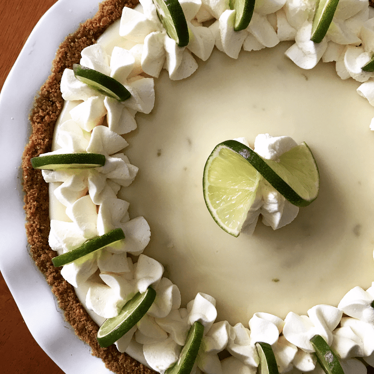

Key Lime Pie

Ingredients
- Sweetened condensed milk: This sweet, smooth, and creamy Key lime pie starts with a can of sweetened condensed milk.
- Key lime juice: Key lime juice comes from the Florida Keys. Key limes are more acidic than regular limes, so they pack a flavorful punch.
- Sour cream: Sour cream contributes to the rich texture and lends subtly tangy flavor.
- Lime zest A tablespoon of lime zest enhances the bold citrusy flavor.
- Graham cracker crust: Use a store-bought or homemade graham cracker crust.
Directions
- Make the filling: Combine the filling ingredients in a bowl and mix well. Pour into the prepared graham cracker crust.
- Bake the pie: Bake the pie in a preheated oven until tiny bubbles appear and pop on the surface of the pie.
- Cool the pie: Allow the pie to cool on a wire rack, then transfer it to the refrigerator to finish setting. Top with whipped cream and lime wedges, if desired.
Resources
allrecipes.com
Home